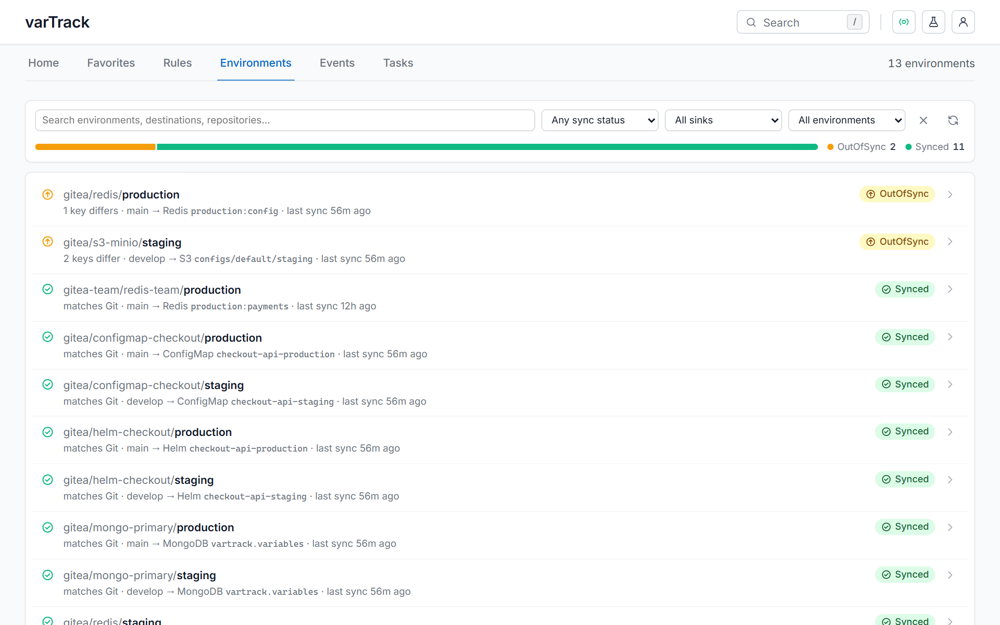

Environment Resolution¶
When a webhook fires, varTrack resolves a single environment string from the event. This string is used to:
- Resolve
{env}indestination_template - Select the correct subtree from env-keyed config files
- Determine which sink collection, prefix, or path to write to
Resolution order¶
varTrack tries each strategy in order and uses the first one that produces a match:
| Priority | Strategy | Example |
|---|---|---|
| 1 | branch_map[branch] |
main → production |
| 2 | file_path_map |
production → configs/prod.yaml |
| 3 | pr_as_env: true |
PR #42 → pr-42 |
| 4 | branch_as_env: true |
branch develop → develop |
| 5 | tag_as_env: true |
tag v1.2.3 → v1.2.3 |
| 6 | none | the push feeds no environment of the rule: it is skipped |
There is no default environment. A push that none of the strategies places feeds nothing of the rule, so it is skipped: the task ends Succeeded · nothing to do and says so (branch feature/x feeds no environment of gitea/redis-hash), and nothing is written to an environment nobody declared. vt sync --env X to an environment the rule does not produce is refused the same way (nothing feeds X in the … rule).
A rule must name its environments¶
A rule has to say where its environments come from: branch_map, file_path_map, branch_as_env, pr_as_env or tag_as_env, in config.cue or the tenant's bundle.json (a repository's vartrack.json may add to them, but cannot be the only place). A rule that names none is refused when it is loaded (so is a rule that names no file to read: it needs file_name or file_path_map in the same two places): nothing runs it, the Rules page lists it as Refused with the reason, an event (RuleRefused) says so, vt validate reports it for a bundle.json, and the rest of the bundle loads.
To keep writing to an environment called default, map a branch to it. The environment, its destinations and its data are the same as before:
default is then an ordinary name: when the branch_map stops mapping it, it is a leftover like any other ("No longer synced by this rule": not compared with Git, its Diff, Sync and Dry run disabled, Forget to drop it).
pr_as_env, branch_as_env and tag_as_env used to be called env_as_pr, env_as_branch and env_as_tags (the S3 option prefix_as_env was env_as_prefix, and ZooKeeper's zk_path_template is now destination_template). The old names still work in config.cue, bundle.json and vartrack.json; varTrack logs a warning with the new name.
branch_map — explicit mapping¶
Map specific branch names to environment names:
rules: [{
platform: "github"
datasource: "mongo"
file_name: "app-settings.yaml"
branch_map: {
main: "production"
develop: "staging"
qa: "qa"
}
}]
Pushes to main write to production-config. Pushes to develop write to staging-config. Any branch not in the map falls through to the next strategy.
The web UI's Environments page lists every resolved environment with the branch it comes from and where it is written:

file_path_map — one file per environment¶
Map each environment to the file that holds its settings, as {env: path}:
rules: [{
platform: "github"
datasource: "mongo"
file_path_map: {
production: "configs/production.yaml"
staging: "configs/staging.yaml"
}
}]
A push that changes configs/production.yaml resolves to production. The path is the file's exact
path in the repository, not a pattern. The same map says which file to read for an environment when a
sync is started by hand (vt sync --revision, the web UI's Sync). A map written the other way round,
{path: env}, is not read that way: the log says so, and the push resolves by the rules below it.
pr_as_env — PR environments¶
Pull request events resolve to pr-{number}. Useful for ephemeral preview environments.
branch_as_env — branch name as environment¶
The branch name becomes the environment name directly:
tag_as_env — tag name as environment¶
Tag push events use the tag name as the environment:
root_key — extracting a subtree before slicing¶
If your config file has a wrapper key, set root_key in the rule to unwrap it first. varTrack extracts the subtree under that key, then reads the environments in it (below).
# configs/app.yaml
vartrack:
production:
database_host: mongo.prod.internal
staging:
database_host: mongo.staging.internal
other_tool:
setting: ignored # not under root_key — never touched
root_key: "vartrack" → extracts the inner dict → its environment objects are read → database_host=mongo.prod.internal for production.
Set root_key: "" to always process the whole file regardless of structure.
If the key is the default, vartrack, and the file does not have it, varTrack uses the whole file. A root_key the rule sets to anything else that the file does not have skips the file: the log says root_key=… not found in …, skipping, and the task reports nothing to do.
Several environments in one file¶
When one config file holds the settings of more than one environment, varTrack reads out the one being synced. Which names are environments is not guessed from the file: it is what the rule declares, plus the environment being synced and default:
| The rule names environments with | The names a file may use for them |
|---|---|
branch_map |
its values (production, staging), not the branch names |
file_path_map |
its keys |
branch_as_env |
every branch of the repository |
tag_as_env |
every tag of the repository |
pr_as_env |
pr-<number> |
"The rule" is the rule a sync runs with: config.cue, then the tenant's bundle.json, then the repository's vartrack.json at the pushed commit, then force. A vartrack.json that adds a branch_map entry adds an environment. The branches and tags are read from the copy of the repository varTrack already holds; no call goes to the Git server.
Two rules read the file.
At the root: environment objects, and a base¶
The keys at the root that are environments (an object under a name the rule declares, or default) are environment objects. Every other key is the base: settings every environment shares. An environment gets the base, then default, then its own object, each laid over the one before:
{
"default": { "db": { "host": "db.internal", "port": 5432 } },
"production": { "db": { "host": "db.prod.internal" } }
}
| env | result |
|---|---|
production |
db.host=db.prod.internal, db.port=5432 |
staging (no object of its own) |
db.host=db.internal, db.port=5432 (from default) |
The merge goes key by key, at every depth: production changed db.host and kept db.port. A list, a number, a string or null in the environment replaces what default has; lists are never joined.
Settings that belong to no environment sit next to the environment objects, and an object may override them:
{
"timeout_ms": 3000,
"default": { "db": "db.internal" },
"production": { "db": "db.prod.internal", "timeout_ms": 1500 }
}
| env | result |
|---|---|
production |
db=db.prod.internal, timeout_ms=1500 |
staging |
db=db.internal, timeout_ms=3000 |
A root made only of objects, one of them default or the environment, is keyed by environment whatever its names: the key of a branch deleted since is an environment object nobody reads, never base settings written into every environment.
Under the root: one value per environment¶
An object whose keys are all default or environments is one value per environment, at any depth and inside lists:
{
"replicas": { "default": 2, "production": 6 },
"db": { "host": { "default": "db.internal", "production": "db.prod.internal" } }
}
| env | result |
|---|---|
production |
replicas=6, db.host=db.prod.internal |
staging |
replicas=2, db.host=db.internal |
An object that has default and a key that is not an environment is not a value per environment. It is written whole:
Every environment gets timeouts.default=30 and timeouts.upload=300.
An environment the file does not name¶
| The file has | qa, which the file does not name, gets |
|---|---|
a default |
default's settings |
settings of no environment, and no default |
those settings only |
| neither | nothing: the file is skipped for qa. The task ends nothing to do and says why (app-settings.json names no environment 'qa' and no 'default'). With strict_validation the file fails with the same words. |
The settings of another environment are never written under qa.
default fallback¶
This default is a key inside the file, not an environment: which environment a push feeds is decided above, and there is no default environment. (branch_map: {main: "default"} makes an environment of that name, and the file's default is then its own.)
With root_key¶
root_key is read first, so the environments can sit inside a block of a file owned by other tooling. Use it to extract only the varTrack-relevant subtree before the environments are read.
A package.json that also carries deploy config:
{
"name": "my-app",
"version": "1.0.0",
"scripts": { "start": "node index.js" },
"vartrack": {
"production": { "API_URL": "https://api.prod.com", "LOG_LEVEL": "warn" },
"staging": { "API_URL": "https://api.stg.com", "LOG_LEVEL": "info" },
"default": { "API_URL": "https://api.local.com", "LOG_LEVEL": "debug" }
}
}
rules: [{
file_name: "package.json"
root_key: "vartrack" // ignore name/version/scripts — only sync vartrack block
branch_map: { main: "production", develop: "staging" }
}]
Push to main → API_URL=https://api.prod.com, LOG_LEVEL=warn written to the sink.
With branch_as_env¶
With branch_as_env the environments are the repository's branches, so a file can key its settings by branch name, feature/login included:
Push to main → replicas=6; a push to any other branch, e2e-feature say → replicas=1.
Combining strategies¶
Strategies can be combined. varTrack uses the first one that matches:
rules: [{
platform: "github"
datasource: "mongo"
file_name: "app-settings.yaml"
branch_map: {
main: "production" // explicit — highest priority
develop: "staging"
}
pr_as_env: true // fallback for PRs not in branch_map
branch_as_env: true // fallback for all other branches
}]
| Event | Resolved env |
|---|---|
Push to main |
production (from branch_map) |
Push to develop |
staging (from branch_map) |
| PR #42 opened | pr-42 (from pr_as_env) |
Push to feature/x |
feature/x (from branch_as_env) |